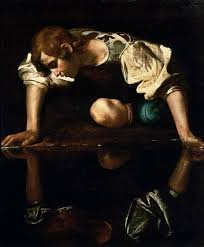
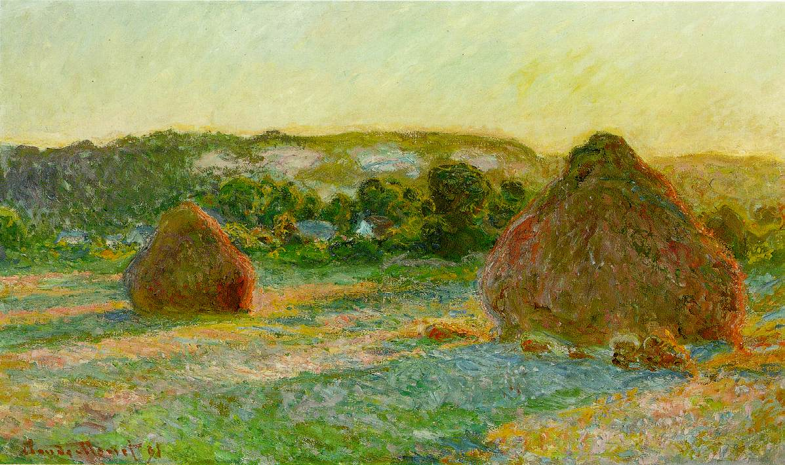
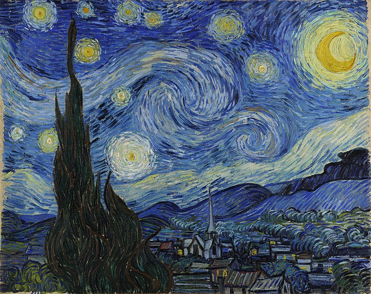

Narcissus is a painting by the Italian Baroque master Caravaggio, painted circa 1597–1599. It is housed in the Galleria Nazionale d'Arte Antica in Rome.
The painting was originally attributed to Caravaggio by Roberto Longhi in 1916.[1] This is one of only two known Caravaggios on a theme from Classical mythology, although this is due more to the accidents of survival than the artist's oeuvre. Narcissus, according to the poet Ovid in his Metamorphoses, is a handsome youth who falls in love with his own reflection. Unable to tear himself away, he dies of his passion, and even as he crosses the Styx continues to gaze at his reflection (Metamorphoses 3:339-510)

Haystacks is the common English title for a series of impressionist paintings by Claude Monet. The principal subject of each painting in the series is stacks of harvested wheat (or possibly barley or oats: the original French title, Les Meules à Giverny, simply means The Stacks at Giverny). The title refers primarily to a twenty-five canvas series (Wildenstein Index Numbers 1266–1290) which Monet began near the end of the summer of 1890 and continued through the following spring, though Monet also produced five earlier paintings using this same stack subject.

The Starry Night is an oil on canvas painting by Dutch Post-Impressionist painter Vincent van Gogh. Painted in June 1889, it depicts the view from the east-facing window of his asylum room at Saint-Rémy-de-Provence, just before sunrise, with the addition of an imaginary village.[1][2][3] It has been in the permanent collection of the Museum of Modern Art in New York City since 1941, acquired through the Lillie P. Bliss Bequest. Widely regarded as Van Gogh's magnum opus,[4][5] The Starry Night is one of the most recognized paintings in Western art.